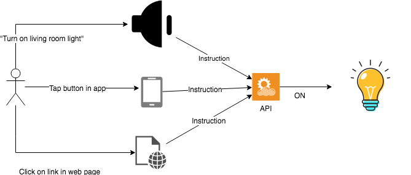
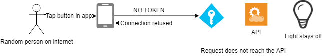

The Hackney API Developer Hub will provide information and instructions on:
Each time you tell your smart speaker to "turn on the living room light" the speaker will send an instruction to an API. The API will then send a series of instructions in the background which eventually culminates in a bulb switching on.
You didn't need to write any complicated code or give any specifics about what "turn on" means or exactly where "living room light" is located. All of this information was dealt with inside of the API.
Wherever possible APIs shouldn't care what is passing it an instruction. Using an app on your smart phone to turn on your living room lights will use the same API and send the exact same instructions as the smart speaker did. The API should behave in the same way to give the same end result.
Therefore an API is a resource that provides a simple way to communicate between two devices or pieces of software.
All HackIT developed code should meet the 12 Hackney Development Standards. These 12 factors (albeit in a adapted or extended form) are used by many development teams around the world to ensure that HackIT APIs are consistent, supportable and of high quality
All newly created HackIT APIs will be developed using the guidelines in the HackIt API playboook. It provides clear guidance on the standards that are being followed when developing new APIs and is also used whenever amending old APIs which were created prior to the existence of the Playbook.
Both of these guides are constantly evolving over time alongside technological changes.
There is more to APIs than just sending a command and the API responding. You obviously don't want anyone on the internet to be able to turn your living room lights on. You need to be able decide who is allowed to turn the lights on. Using an API Gateway we are able to issue Tokens to people who want to use our APIs. Each time a developer attempts to access our APIs they will provide this token, essentially telling us who they are. Requests to our APIs that do not provide the token will be rejected.
You may also want to ensure that someone cannot bombard your API with thousands of calls over a very short period of time. This could cost you time and resources.
Using the tokens we can limit how often they can use the API.